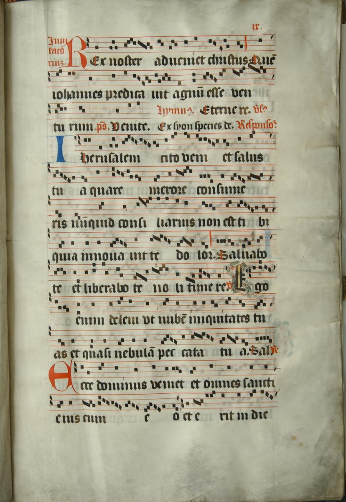
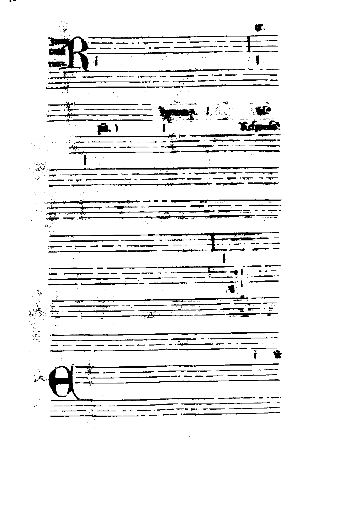

The Road to Recognition: Preparing the Images
Posted by ahankins on October 13, 2011
We’ve been working on getting our new book, the Salzinnes Antiphonal, prepped and ready for the OMR process. Part of this process involves separating the different components of the images into different files, minimizing clutter and reducing the amount of information that the computer will have to work with.
We start with a fairly handsome page. Meet Salzinnes f. 9r:

The first thing we need to do is to convert this image to black-and-white through a process called “binarization.” This process makes it very easy for a computer to decide what parts of the image are important and what aren’t. If it’s a black pixel, the computer needs to do something about it; if it’s a white pixel, it can ignore it. The binarization process cleans up some of the foxing, page creases, and other bits of the image that the computer might otherwise eventually confuse with musical information. It’s a delicate process, especially for older documents where you get heavy discolouration or bleedthrough – that is, where the ink from the other side of the page shows through on this side. You want to remove as many extraneous pixels as you can, while keeping the “real” pixels intact.
The next thing we need to do is to remove the staves, so that the computer can recognize items without confusing them with the lines they are written onto. While normally this is a highly involved process, this particular manuscript presents an interesting opportunity to solve the problem of binarization and staff removal in a single step. You will notice that this manuscript, like many others of its day but unlike our modern musical scores, uses red ink for the staff lines and black ink for the notes. Through using image manipulation tools we can separate out the different basic colours, Red, Green and Blue, into separate layers. Thus, if we extract just the Red layer, we end up with this image:

And, by the same token, if we take everything but the red layer, we get an image that looks like this:

Which is just what we need - Amazing!
While these images may look ugly to humans, drawing them out of the original image is an essential step in getting the computer to recognize the shapes on the page.
In our next few installments in the “Road to Recognition” series, we’ll demonstrate how we can further simplify these images, and the variables you need to take into account while performing these operations.